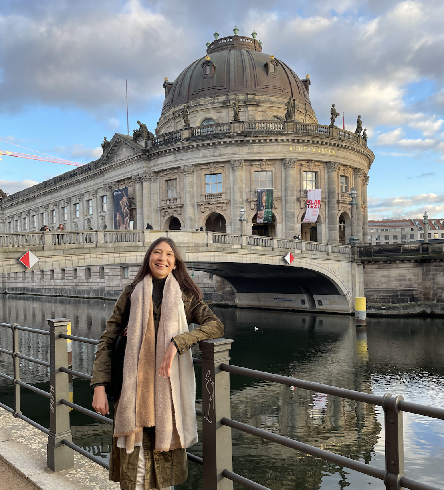

About Me

I am an NLP Developer and Machine Learning Engineer with 3+ years of experience building and deploying production-grade AI systems. I currently work at Nalantis (Belgium), where I build multilingual semantic information extraction services and RAG pipelines for enterprise clients. My interests span natural language processing, generative AI, and applied LLM research.
I hold an M.Sc. in Cognitive Systems from Universität Potsdam, Germany, and a B.Sc. in Computational Linguistics from Al-Farabi Kazakh National University, Kazakhstan. My master's thesis on LLM spatial reasoning was published as a conference paper. Previously, I worked as an NLP Data Analyst at UNICEPTA Corporate Intelligence in Berlin, where a team of two effectively replaced an entire department's workflow through custom ML modules.
Professor of University of Potsdam
I can unreservedly recommend Yerkezhan for any position in Natural Language Processing, or more generally Artificial Intelligence or Data Analysis where knowledge of state of the art programming and analysis methods is required. She will be a great addition to any team, as she was to my research group.
Data Scientist at UNICEPTA Corporate Intelligence
I highly recommend Yerkezhan Abdullayeva as a dedicated and professional Data Analyst. As her direct supervisor for her internship at Unicepta Corporate Intelligence, she consistently demonstrated enthusiasm and commitment to producing high-quality work. Yerkezhan implemented data processing modules to prepare data for NLP tasks, performing thorough analyses on unstructured textual documents and generating insightful reports. Her technical and problem-solving skills have shown significant growth, particularly in Python and data processing.
Kristof Vannotten
Chief Technology Officer, Nalantis
What distinguishes Yerkezhan is her ability to combine machine learning development with production-minded engineering. She not only implemented NLP features, but also worked effectively within our deployment and CI/CD processes. She actively explored new NLP techniques, trained custom models, and contributed to early work involving retrieval-augmented generation and large language model integration. Beyond technical ability, Yerkezhan is reliable, collaborative, and quick to take ownership.